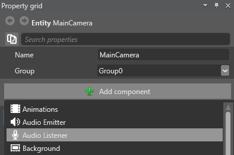

Audio listeners
Warning
Приносим свои извинения за неудобства. Для этой страницы нет перевода на русский язык. Она будет отображаться на английском языке.
Beginner Designer
An audio listener is an entity that listens for audio emitted by audio emitters to create spatialized audio. There can be multiple audio listeners in a scene. This is common, for example, in multiplayer games, where each player camera is an audio listener.
You don't need to configure audio listeners. All settings for sound effects, including Volume and Pitch (Frequency), are configured on the audio emitter.
If there's no audio listener in the scene, you won't hear audio from audio emitters.
Add an audio listener component to an entity
To create an audio listener, attach an audio listener component to an entity. You can attach this component to any entity.
In Scene view, select the entity you want to be an audio listener:

In the Property Grid, click Add Component and select Audio listener component:

The entity is now an audio listener.
Warning
On iOS, you can create multiple objects with Audio listener component in a scene, but only one is used at runtime.